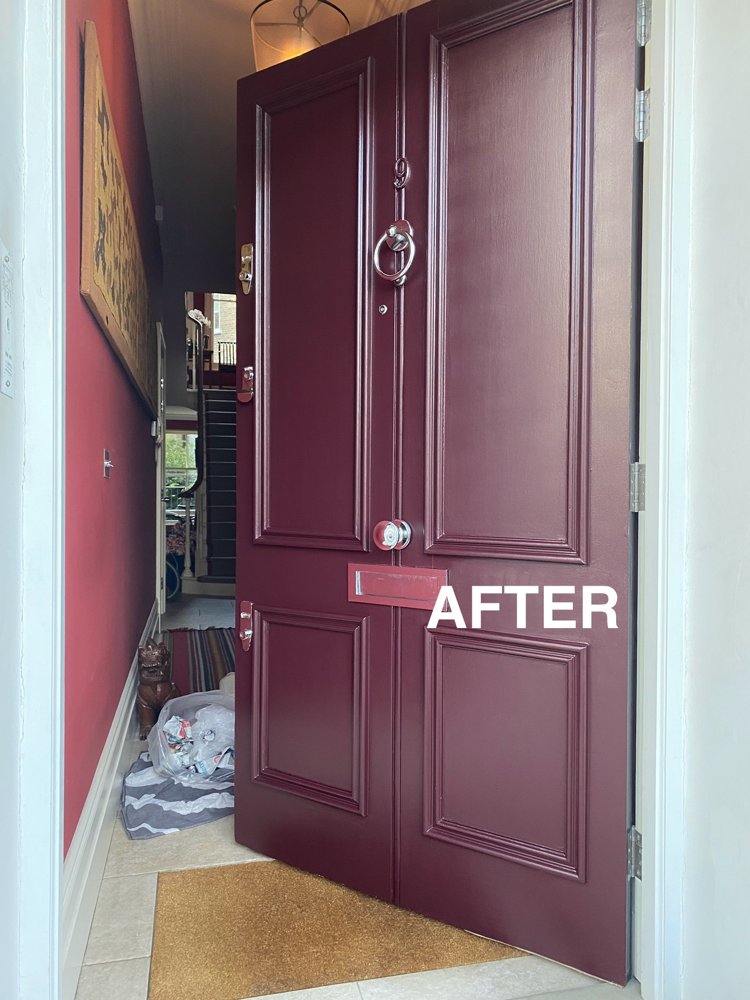
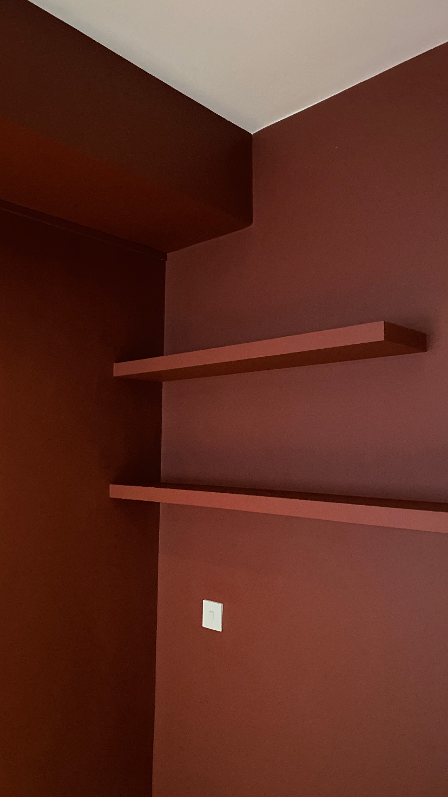
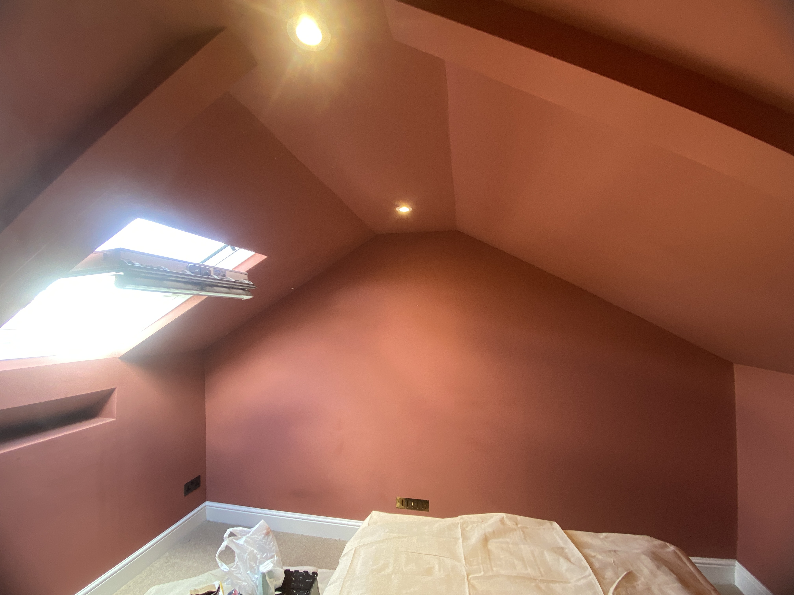
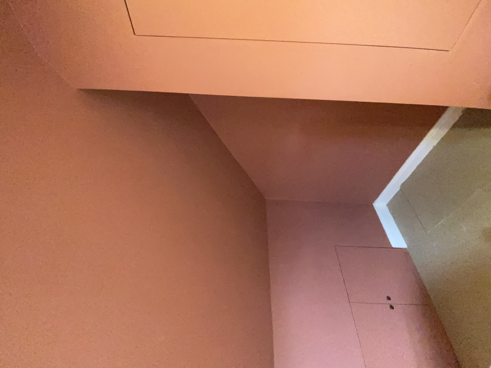
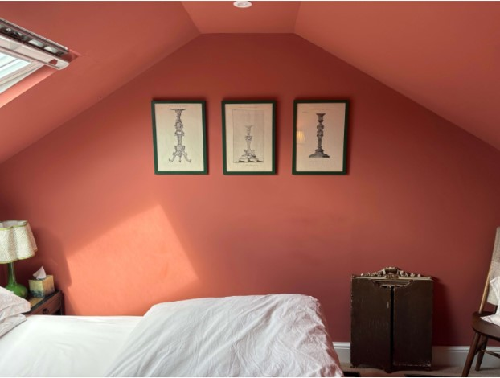

Why Red and Terracotta Feel So Good: The Psychology Behind Thailand's Favourite Spa Colours
Walk into a room painted in deep terracotta or a rich red and you often notice the colour before you notice anything else. The room can feel warmer, more intimate and more settled, even when the furniture has not changed at all. That is one of the reasons these colours have such a strong place in interior design.
There is more going on here than decoration. Colour can influence the way we experience a room, and red is particularly interesting because its effect can change dramatically with the shade, the light, the materials around it and the size of the space. Traditional Thai spa interiors offer one interesting example, while artists have used the same family of colours to create completely different emotional responses.
Content note: This article was created with AI assistance and reviewed and edited by Daniel Pedro V Sousa, drawing on EveroDecor's own project photography.

The Emotional Register of Red and Terracotta
Red sits firmly at the warm end of the colour spectrum, and it tends to attract attention quickly. It can feel energetic, intimate and confident, but the result depends greatly on how the colour is used. A strong red on one wall can bring focus and drama, while a softer red or a muted terracotta can create a much quieter atmosphere. This is why red can work so well in dining rooms, bedrooms, hallways and front doors, where a little character can make a big difference.

A saturated red or burgundy front door signals confidence and warmth before a guest even steps inside — one of the oldest uses of the colour in British architecture.
Terracotta is the more relaxed member of the red family. The name comes from baked earth, and that connection is easy to see in the colour itself. It can remind us of clay, brick, old tiles, plaster and sun warmed walls. Compared with a saturated red, terracotta usually feels softer and easier to live with across a larger area. It has warmth and character without demanding quite as much attention, which makes it especially useful when you want a room to feel welcoming rather than dramatic.
Why the Effect Is So Physical
Colour is not experienced in isolation. Our response to a room is influenced by the light, the materials, the proportions and the colours surrounding us. Warm shades such as red and terracotta can make a space feel warmer and more enclosed than cooler colours, even when the actual temperature has not changed. In a living room or dining space, that sense of warmth can make the room feel more inviting and encourage people to settle in.
Red velvet is a good example of how colour and texture work together. The red brings warmth and drama, while the velvet adds softness, depth and a sense of luxury. The same shade would feel very different on a hard glossy surface, where the light would make it sharper and more reflective.

Red in soft materials — velvet, wool, linen — reads as sensual and comforting rather than stimulating, because texture moderates the colour's intensity.
Used in a smaller area, such as a front door, alcove, piece of furniture or single wall, red can give a room energy and a strong focal point. Terracotta works differently when it covers a larger area. Because it is softer and more earthy, it can wrap a room in colour without creating the same level of visual intensity. The finish and the lighting then become just as important as the colour itself.
Why Thai Spas Reach for These Tones Specifically
Thai spa interiors often combine warm colours with natural materials, soft lighting and an atmosphere designed to feel calm and restorative. Thai traditional medicine and wider Asian wellness traditions provide part of the cultural background for this approach, while the interior itself also draws heavily on materials and colours found in the surrounding environment. Red and terracotta can therefore feel at home alongside timber, stone, clay, woven fabrics and warm light.
In an interior inspired by this approach, you can see the idea expressed in several practical ways:
- Terracotta and clay red walls can echo natural materials such as clay, timber and stone, helping the colour feel connected to the architecture rather than simply added to it.
- Warm, low, amber toned lighting can soften red and terracotta, bringing out their earthy qualities and creating a gentler atmosphere in the evening.
- Deep red used sparingly in cushions, textiles or decorative details can add contrast and energy without taking over a room intended for rest.

Combined with low, warm lighting, a terracotta ceiling and walls turn even a small space into something that reads as enveloping rather than cramped.
There is also a simple sensory reason these colours can work well in a spa setting. Warm colours, warm lighting and natural materials all contribute to the impression of heat and comfort. When those elements are combined with a treatment such as massage, the room feels visually connected to the experience rather than separate from it.

Carrying the same terracotta onto a pitched ceiling can also change the way we read the proportions of a room. Instead of creating a strong contrast between the walls and ceiling, the colour connects the surfaces and makes the room feel more enveloping. In a smaller room, this can create a surprisingly cohesive result.
The finish matters too. A matt or low sheen terracotta tends to absorb more light than a glossy surface, which can make walls look softer and help reduce distracting reflections. This is particularly useful in rooms with awkward angles, strong daylight or several artificial light sources.
.jpeg)
Painting built in storage close to the wall colour can make the whole scheme feel more considered. Instead of creating another strong block of colour, the joinery becomes part of the background and allows furniture, artwork and natural materials to stand out.

Small details can make a difference too. Darker switches and sockets can sit more quietly against a terracotta wall than bright white ones. These details are easy to overlook, but reducing small areas of strong contrast can help the overall colour scheme feel more continuous.

Terracotta also works comfortably with many other materials. Brass, dark timber, natural fabrics, ceramics and botanical greens can all sit naturally alongside it. This makes it a useful background colour when you want a room to feel layered rather than perfectly matched.
What Artists Reach for Red to Say
Artists have returned to red for centuries because it is difficult to ignore. Yet the emotion it creates is not fixed. A red room can feel welcoming, intimate or dramatic, while a painting using the same colour family can feel disturbing or overwhelming. Looking at the work of a few artists makes that difference particularly clear.
Henri Matisse is a fascinating example because his use of red changed with the work. In The Dessert: Harmony in Red (1908), the colour feels intense and immediate, while in The Red Studio (1911), a more muted Venetian red creates a quieter relationship between the room, its objects and its other colours. Red is doing two very different jobs. In one painting it demands attention, while in the other it helps create a unified environment.
Mark Rothko used large fields of colour to create an experience rather than simply a picture. His red works can feel immersive because of their scale, colour relationships and the way they were intended to be viewed. The result can be contemplative and intense, showing how far red can move away from the warmth we normally associate with it in an interior.
Louise Bourgeois gave red a much more personal and psychologically charged role. Her red rooms and sculptures connect the colour with memory, family, vulnerability and difficult emotions. The enclosed spaces and objects in these works make the colour feel intense rather than comforting, reminding us that red can carry very different meanings depending on its context.
Anish Kapoor has explored red through ideas of the body, the earth and physical material. His use of pigment and wax can make red feel deep, dense and almost bodily. Again, the colour is familiar, but the experience is completely different from the welcoming terracotta of a living room.
Seen alongside these artists, the use of red and terracotta in a home becomes even more interesting. The colour itself has not changed, but the surrounding materials, lighting, finish and proportions have. In an interior, a muted terracotta wall can feel like shelter, while a saturated red in an artwork can feel confrontational. Context is what changes the experience.
Further viewing:
- Henri Matisse, The Red Studio (1911) — MoMA
- Mark Rothko, Untitled (Red) — National Gallery of Victoria
- Louise Bourgeois, Red Room (Child) and Red Room (Parents) (1994) — Guggenheim Bilbao
- Anish Kapoor, Svayambh (2007) and related red works — Lisson Gallery
Bringing It Home
You do not need a large budget or a completely new interior to bring some of this feeling into your home. A few simple choices can make a noticeable difference:
- Use terracotta as the base and red as an accent. A softer terracotta can cover a larger area, while a stronger red can be introduced through a door, piece of furniture or smaller wall.
- Pair it with warm lighting rather than very cool white light. Warm bulbs can bring out the earthy side of terracotta and make the colour feel richer in the evening.
- Let the materials add depth. Velvet, brass, ceramics, timber and natural fabrics can give a terracotta room variation without requiring lots of different colours.
- Keep stronger reds for areas where you want impact. A front door, snug, hallway or powder room can handle a bolder colour particularly well because you experience it differently from a bedroom or main living space.
Red and terracotta have a much longer history than any current decorating trend. What makes them interesting is their flexibility. Change the shade, finish, lighting or surrounding materials and the same colour family can become dramatic, intimate, calm or earthy. That is what makes these colours so useful in interior design. They are not simply colours to look at. They help establish the character of a room.
Frequently Asked Questions
Why do Thai spas use red and terracotta so often?
Thai spa interiors often combine warm colours with natural materials, soft lighting and an atmosphere designed to feel calm and restorative. Red and terracotta can contribute to that feeling by adding warmth and visual depth, especially when they are combined with timber, stone, clay and gentle lighting.
What's the difference between red and terracotta in a room?
Red is usually stronger and more visually demanding, so it can work particularly well as an accent. Terracotta is softer and more earthy, making it easier to use across larger areas. The exact result still depends on the shade, finish, daylight and colours around it.
Will a terracotta or red bedroom feel too intense?
A matt, earthy terracotta can create a cosy atmosphere, particularly when it is balanced with warm lighting and natural materials. If you are concerned about using too much colour, a stronger red can be limited to a door, alcove, piece of furniture or single wall.
Which artists are known for using red to evoke emotion?
Henri Matisse, Mark Rothko, Louise Bourgeois and Anish Kapoor have all explored red in very different ways. Matisse used it to create harmony and visual intensity, Rothko used large fields of colour to create an immersive experience, Bourgeois connected it with personal and psychological themes, and Kapoor has explored its physical and bodily qualities.
Does the same red colour always evoke the same feeling?
No. The same family of colours can feel completely different depending on the shade, finish, lighting, materials and setting. A matt terracotta wall with warm lighting can feel earthy and comforting, while a saturated red in an artwork can feel intense, dramatic or unsettling.
Thinking About Bringing Warm, Earthy Tones Into Your Home?
EveroDecor works across West London, from single accent walls and feature spaces to complete room colour schemes. If you are considering terracotta, red or another warm earthy colour, the right preparation and finish can make just as much difference as the colour itself.
Get In Touch